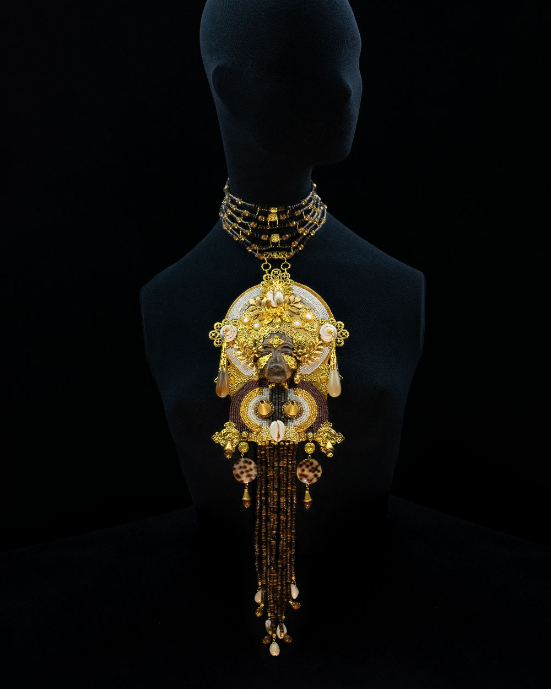

Lacrimae Mundi — I Influenced by Orthodox Baroque and African Sacred Art Reliquary Plastron Necklace “Lacrimae Mundi — The Tears of the World” See More →
 Lacrimae Mundi — II Influenced by Orthodox Baroque and African Sacred Art Reliquary Plastron Necklace “Lacrimae Mundi — The Madonna Without Child” See More →